Advanced Software Engineering · Course project
WasteMS
Smarter waste-collection tours for Lower Manhattan.
Problem
449 baskets. One depot. One-way streets.
Lower Manhattan's sanitation district MN01 is the real-world case behind WasteMS.
Real locations
449 DSNY litter baskets and the MN01G garage from NYC Open Data, with their source ids.
Real streets
Tours follow a directed OpenStreetMap road graph, because straight lines ignore one-way streets.
Synthetic operations
Demand, vehicles, crews and tours are generated for the demo and always labelled as synthetic.
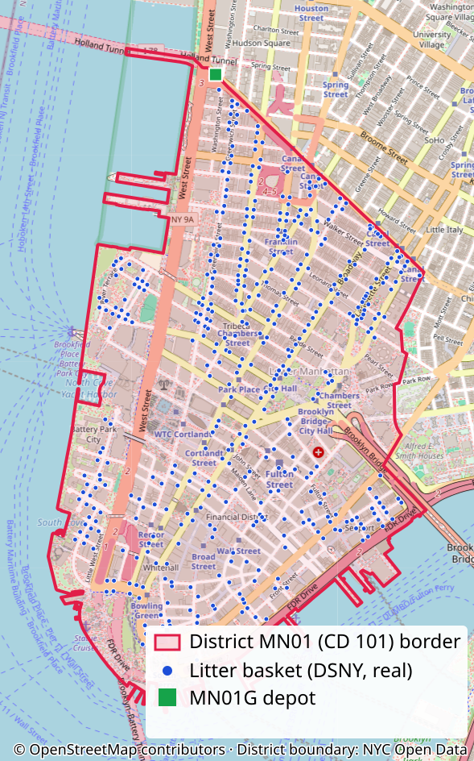
Problem
Plan. Optimize. Collect. Measure.
One map-centric tool for planners, crews and admins, with an optimizer I measured.
The problem
Tours sequenced by hand or on straight lines waste road distance.
The product
Plan, optimize and follow collection tours on real streets, in one web app.
The result
−48.42 %
road distance against a published baseline, every stop covered, no capacity exceeded.
Problem
Three roles. Thirty requirements.
Every functional requirement is traced to user stories, use cases and code.
Planner
Prepares points, fleet, crews and tours, runs the optimizer and corrects outcomes.
Agent
Sees only the tours they are assigned to and records the outcome of each stop.
Administrator
Manages accounts, roles and waste categories, and reviews the audit log.
30 functional requirements in 8 groups
12 non-functional requirements — five shape the design
- Security · hashed passwords, server-side authorization
- Explainability · inputs, order and indicators visible
- Fair evaluation · same data and formulas for every method
- Reproducibility · commands, snapshots and versions recorded
- Provenance · real and synthetic data always distinguishable
Problem
The research question
Does an optimizer really shorten tours, against a fair baseline and the same constraints?
To what extent does integrating an intelligent tour-optimization module reduce total road-network travel distance and estimated collection duration compared with a documented baseline, while satisfying the same vehicle-capacity and collection-service constraints?
Problem statement
Build a coherent, map-centric waste-management prototype for a real Lower Manhattan case, with road-following tours and an intelligent optimization module, and evaluate it reproducibly, without presenting synthetic operations as measured reality.
What I measure
- Road distance · directed, on the real road graph
- Estimated duration · travel time plus 600 s service per stop
- Constraint violations · must be zero, same stops for every method
Problem
Building on 67 years of routing research
Ten peer-reviewed sources shaped my model, my methods and my baseline.
Tour improvement by edge exchange: the root of 2-opt.
The truck-dispatching problem: demand and capacity.
Savings: fast construction of feasible routes.
Local search finds local, not global, optima.
The sweep algorithm: my published baseline.
Nearest neighbor has weak worst-case bounds.
Waste collection is many problems: state the variant.
What I borrow
- Nearest-neighbor construction, then 2-opt improvement
- Sweep (Gillett & Miller) as a citable, realistic baseline
- The same capacity check for every method
What I do not claim
- Global optimality or state-of-the-art performance
- Generalization beyond the seeded MN01 scenarios
- Superiority over exact solvers or metaheuristics
Product
Eleven sprints, one backlog
Scrum for a solo project: every sprint ends with a done-check, a review and a retrospective.
Product Backlog
39
user stories in 8 epics, each with acceptance criteria
P0 13 · P1 17 · P2 9
“As a planner, I want to compare baseline, nearest-neighbor and optimized routes and indicators so that I can understand where the measured improvement comes from.”
US-23 · P1
Sprint roadmap
Foundation
Optimization
Operations
Evaluation
Every sprint
Sprints are ordered work packages without calendar dates (D-006). Implementation was carried out with an AI coding assistant under the same gates (D-005).
Product
Modelled before it was built
Four UML views and OCL invariants pin down the domain. Click a diagram to explore it.
Use cases
25 use cases traced to 39 stories
Class model
The operational domain
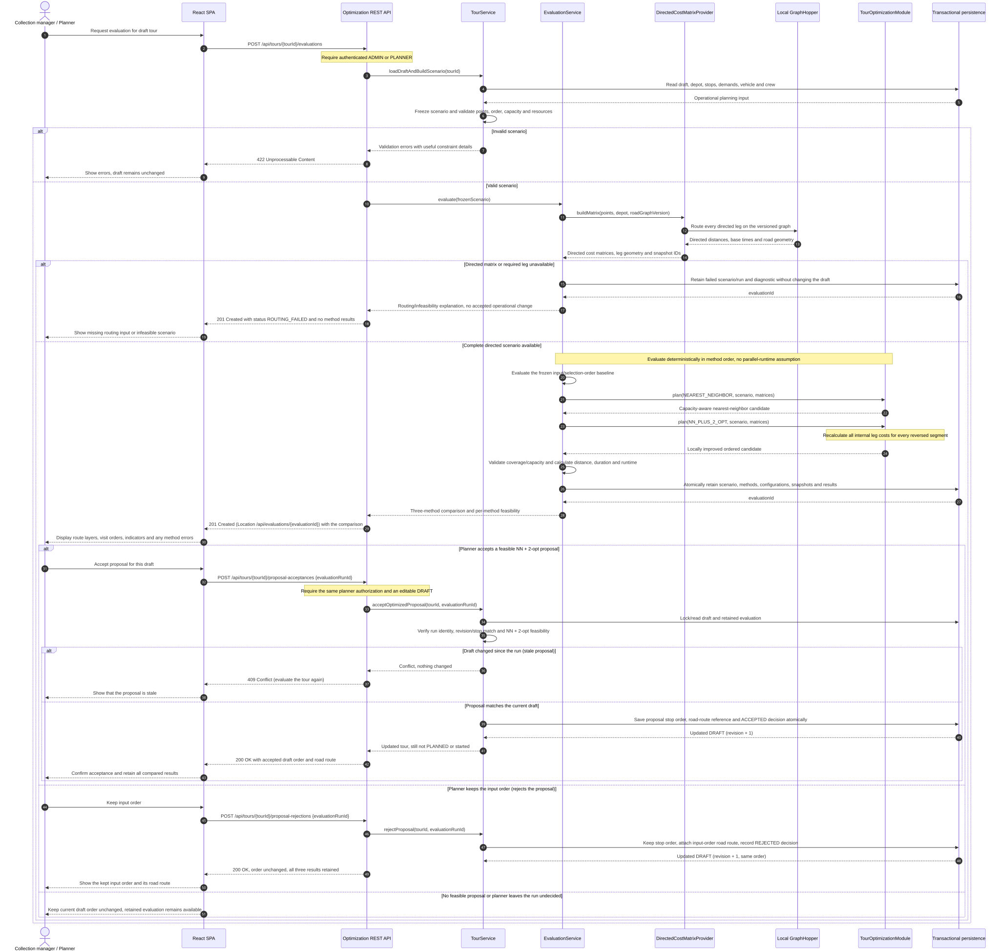
Sequence
Four-method evaluation, explicit acceptance
Activity
Tour lifecycle, draft to done
OCL
context DemandEntry inv PositiveDemand: quantityKg > 0
Further invariants cover coordinates, crew and capacity, stop order and lifecycle operations.
Product
A layered app around an isolated optimizer
The optimizer depends on java.* only and sees just a cost matrix; a test enforces it.
Layered backend
Web, service, domain and repository layers; DTOs are Java records.
Embedded routing
GraphHopper 11.1 runs in-process on a versioned OSM snapshot.
Typed frontend
React 19, TypeScript strict, Leaflet maps, TanStack Query.
Java 21 · Spring Boot 3 · Spring Security · JPA · H2 · React 19 · Vite · Tailwind v4 · shadcn/ui · GraphHopper 11.1 · NYC DOT traffic (display only)
Product
Live demo
From a draft tour to a completed collection, in four steps.
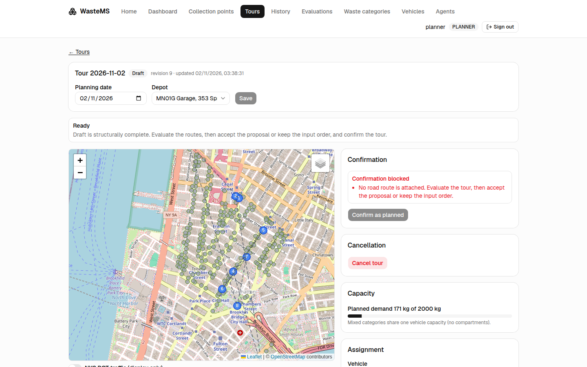
1 · Plan · planner
Six demo tours, one per lifecycle state. Open the 12-basket draft.
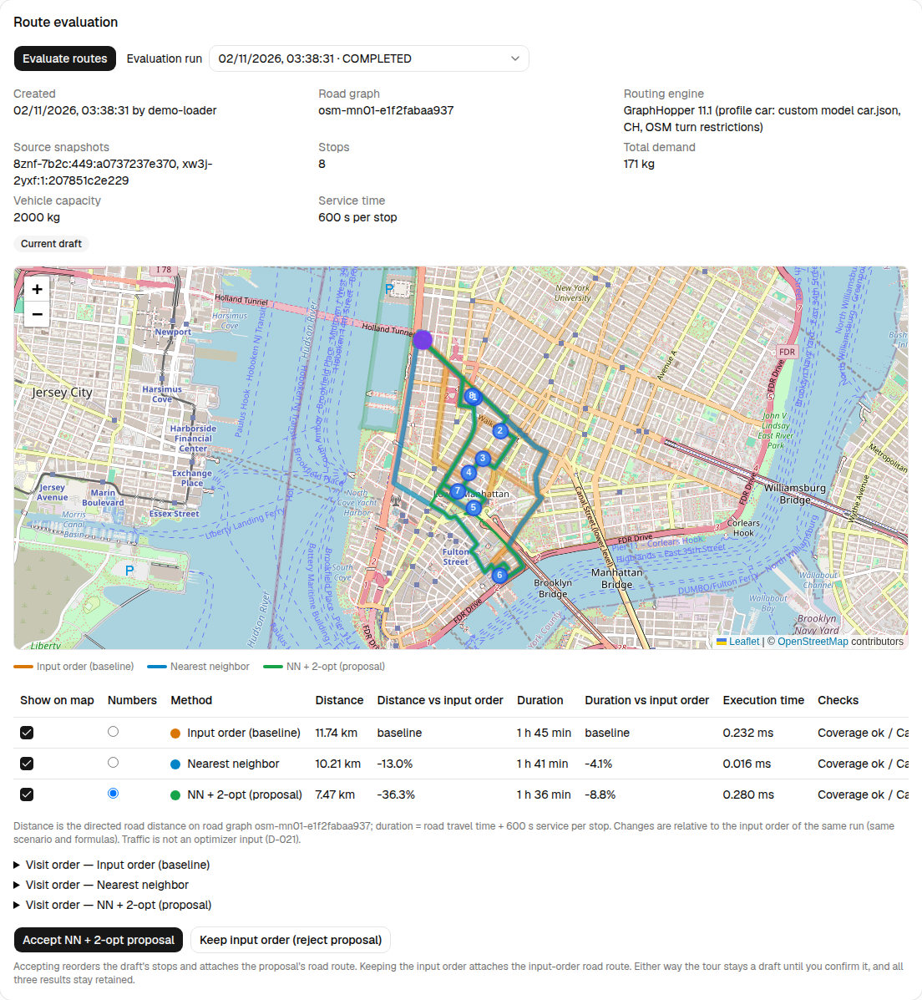
2 · Optimize · planner
Compare four routes on real streets, accept NN + 2-opt, confirm as planned.
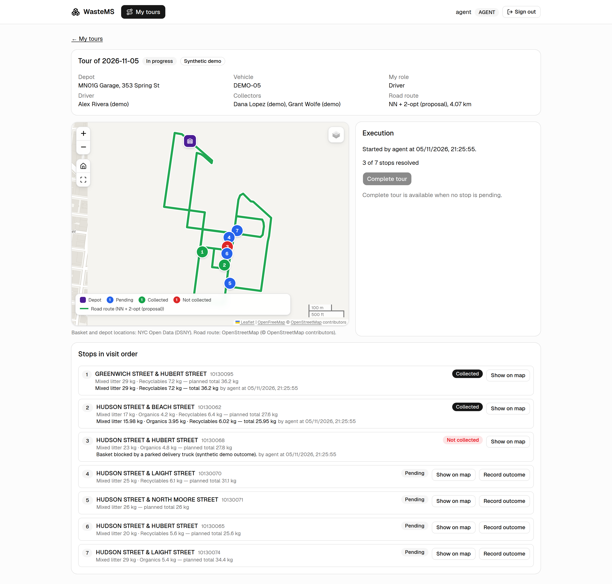
3 · Execute · agent
Start the tour, record each stop's outcome, complete it.
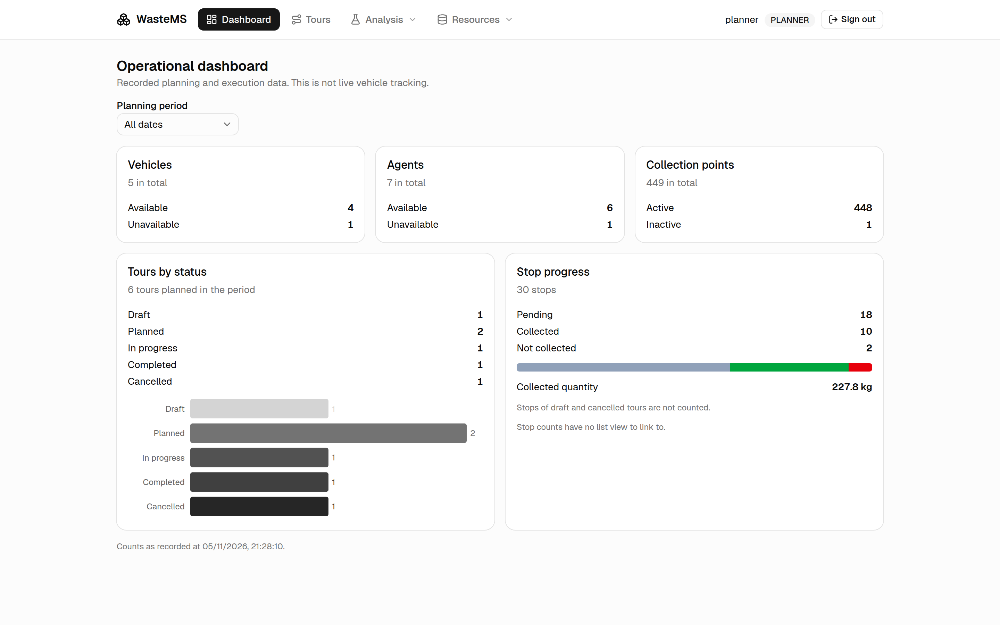
4 · Supervise · planner, admin
Correct an outcome, follow the dashboard, audit every change.
Run it yourself: tools/demo.sh · planner / planner123 · agent / agent123 · admin / admin123 · full script in the appendix
Proof
31,277 lines of code, mostly simple
Mean cyclomatic complexity is 2.22; the complexity sits in a handful of classes.
31,277
source lines: Java 11,441, tests 10,494, TypeScript 9,342
2,471
methods in 275 classes
2.22
mean cyclomatic complexity, max 39
9.15
mean coupling between objects (CBO), max 67
14
median lack of cohesion (LCOM), max 1,378
1.71
mean depth of inheritance (DIT), max 6
Hot spots: the refactoring candidates
ScenarioCsvImportService.checkRow· complexity 39TourStop.correctOutcome· complexity 33DemoDataService· coupling 67, the highestTourService,Tour· top lists for size, coupling and cohesion- 137 PMD code smells in 35 files; top rule: cyclomatic complexity
- One package cycle through
config/ optimization/· zero internal dependencies, test-enforced
CKJM, PMD, JDepend and a language-aware LOC counter; vendored shadcn/ui excluded. Reproduce with bash tools/metrics.sh.
Proof
Shorter routes, every time
Nearest neighbor + 2-opt beat the sweep baseline on all 20 distinct routing instances.
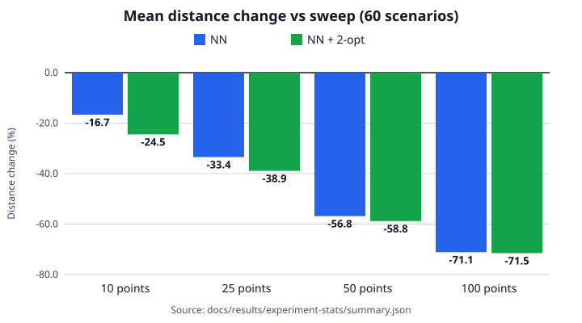
−48.42 %
mean road distance against sweep · −7.29 % estimated duration
- 20 of 20 instances shorter · exact Wilcoxon p = 1.91 × 10−6, Holm-adjusted 1.72 × 10−5
- Against a random input order: −60.18 % distance
- Duration moves less: 600 s of service per stop is the same for every method
Bounded claim: seeded MN01 scenarios only; no optimality or generalization claim (docs/06-metrics.md §6). Gain grows with tour size: −24.45 % at 10 points, −71.51 % at 100.
Wrap-up
What the retrospectives taught me
Each of the eleven retrospectives ended with one concrete process change.
Use a fair baseline
My first baseline was a random order. Re-running against the published sweep (S11) cut the claimed gain from −60.18 % to −48.42 %.
Verify the tools
JDepend silently skipped most Java 21 classes (S10). The metrics script now fails loudly instead.
Check the checks
Three done-check assertions were wrong, not the code (S5). Corrections are kept and logged next to the original script.
Render right after editing
Rendering every diagram immediately caught a real Mermaid error (S6).
Isolate the environment
Foreign dev servers held the default ports (S1). Every sprint now uses spare ports and a scratch database.
Name the gaps
The frontend was verified by build, lint and HTTP checks, not by browser tests (D-040), and that is stated, not hidden.
Wrap-up
What it shows, and what comes next
A complete, traceable prototype on real NYC data, and a measured, bounded answer.
What it shows
- Planning, optimization, execution and audit, on real NYC locations and streets
- Requirements traced to stories, use cases and code
- NN + 2-opt: −48.42 % road distance against a published baseline, no constraint violated
Where it stops
- Synthetic demand, one district, one vehicle per tour, no time windows
- Capacity never binds: 60 scenarios are 20 distinct instances
- Sweep is a published heuristic, not DSNY's real sequence
- Traffic is displayed, not used in the costs
What comes next
- Or-opt, 3-opt or a metaheuristic; an exact solver for the optimality gap
- Multi-vehicle routing, a truck profile, time windows
- Capacity-binding demand and real operating sequences
- Split
TourService, break theconfig/cycle
Thank you.
Questions?
github.com/anasdeyra/waste-management-system
Code, documentation, measured data and this deck. Try the seeded demo: tools/demo.sh
Data: NYC Open Data (DSNY, NYC DOT). Map data © OpenStreetMap contributors.
Appendix
Demo script
Start with tools/demo.sh; tools/demo.sh --reset rebuilds the demonstration data. Full walkthrough in the README.
- As
planner, open Tours: six demo tours (a draft, two planned, one in progress, one completed, one cancelled). - Open the draft, Route evaluation: compare the four routes, accept the NN + 2-opt proposal, confirm as planned.
- Open the in-progress tour: stops coloured by state, execution progress.
- As
agent, My tours: open the former draft, start it, record outcomes, complete it. - As
agent2: only the assigned planned tour is listed.
- As
planner, correct the not-collected stop of the completed tour; cancel a planned tour with a reason. - Open History and filter by status; open the Dashboard and follow a count to the filtered list.
- As
admin, open the Audit log and filter by action. - As
admin, run an experiment in Evaluations, export the CSV, import the scenarios again. - Switch on the NYC DOT traffic layer: display only, routes do not change.
Appendix
Route evaluation of the demo draft
Twelve baskets, four methods, the same road graph and the same formulas.
| Method | Distance | vs input | vs sweep |
|---|---|---|---|
| Input order | 8.74 km | — | — |
| Sweep (Gillett & Miller) | 7.92 km | −9.4 % | — |
| Nearest neighbor | 4.64 km | −46.9 % | −41.4 % |
| NN + 2-opt (proposal) | 4.64 km | −46.9 % | −41.4 % |
On this small tour 2-opt finds no further gain over nearest neighbor. The planner accepts the proposal or keeps the input order; nothing changes silently. Sweep is a comparison only and is never attached to a tour.
Fresh dev demonstration load, 5 November 2026.
Appendix
Planning a tour
Stops picked on the map or in the list, crew and vehicle assigned, capacity checked before confirmation.
Appendix
Crew execution
Agents see only their tours; outcomes carry quantities per category or an incident reason.
- Agents see only the tours they are assigned to, as driver or collector.
- The map colours stops by state: pending, collected, not collected.
- Outcomes carry quantities per waste category and an incident reason.
- Planners can correct outcomes afterwards; the previous values stay visible and audited.
Appendix
Dashboard, evaluations, audit, traffic
Supervision views for planners and administrators.
Operations dashboard
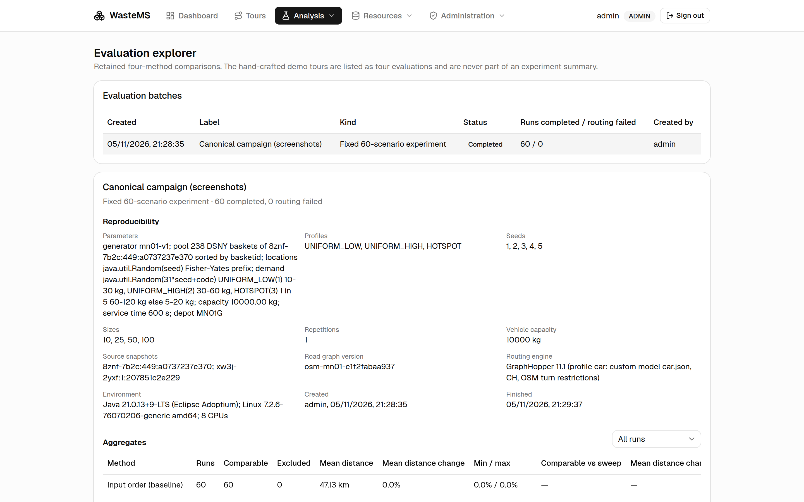
Evaluation explorer
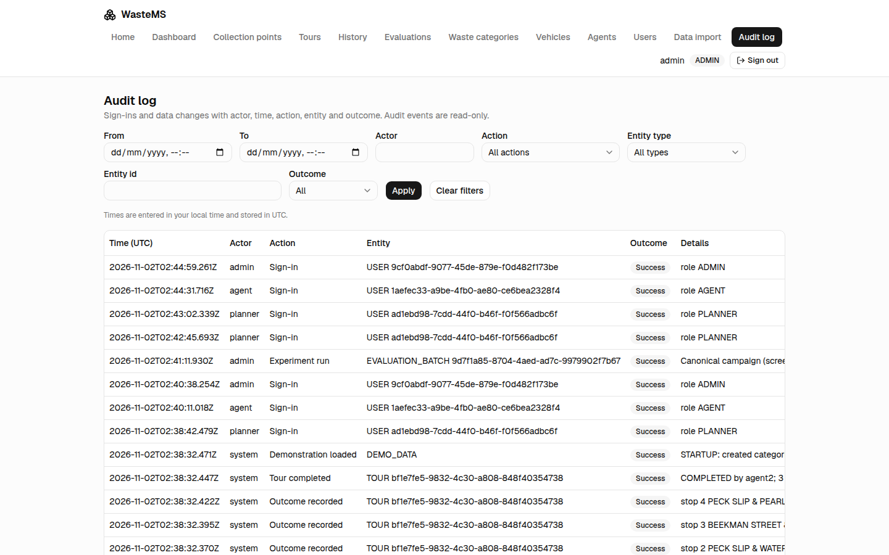
Audit log
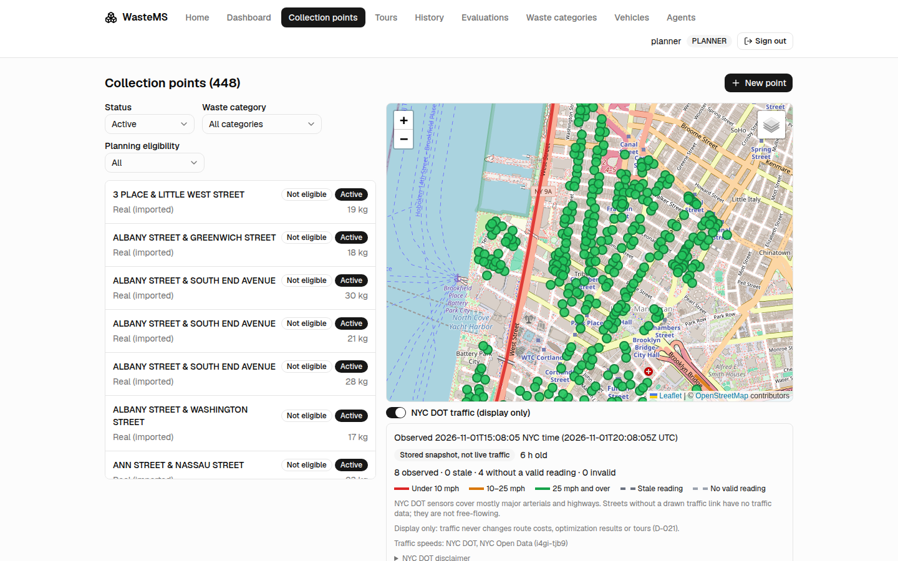
NYC DOT traffic, display only
Also implemented: evaluation CSV import and export, and the seeded experiment runner.
Appendix
Threats to validity
What limits how far the −48.42 % can be read.
- Baseline · sweep is a published heuristic, not the real DSNY sequence (none is public); its angular order ignores the road network. The input order is a random shuffle and overstates any gain.
- Objective versus legs · the optimizer minimizes distance while GraphHopper legs follow fastest paths; the
carprofile stands in for a truck. - Collapsed profiles · capacity never binds, so 60 scenarios are 20 distinct instances, and sizes are nested.
- Synthetic demand, one district · MN01 only, one depot, one vehicle, no time windows.
- Traffic is not in the costs · durations are base travel time plus service.
- Execution time covers sequencing only · not the road matrix; the first repetition shows JIT warm-up.
Appendix
Results by size, against sweep
Mean directed distance change, 60 scenarios, repetition 1.
| Points | NN | NN + 2-opt |
|---|---|---|
| 10 | −16.67 % | −24.45 % |
| 25 | −33.45 % | −38.91 % |
| 50 | −56.82 % | −58.80 % |
| 100 | −71.15 % | −71.51 % |
| All | −44.52 % | −48.42 % |
Source: docs/results/experiment-stats/summary.md (b2).
Appendix
Results by size, against the input order
The worst case: a random shuffle of the same stops.
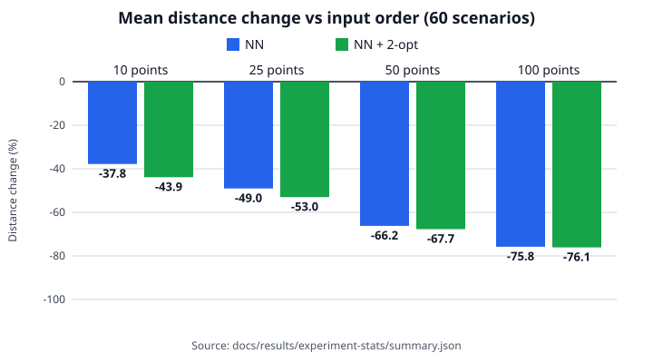
| Points | Sweep | NN | NN + 2-opt |
|---|---|---|---|
| 10 | −25.47 % | −37.78 % | −43.89 % |
| 25 | −20.96 % | −49.04 % | −53.00 % |
| 50 | −21.00 % | −66.20 % | −67.72 % |
| 100 | −15.69 % | −75.78 % | −76.10 % |
| All | −20.78 % | −57.20 % | −60.18 % |
Source: docs/results/experiment-stats/summary.md (b).
Appendix
Statistical detail
Paired tests on the 20 distinct routing instances.
- NN + 2-opt was shorter than sweep in 20 of 20 instances (exact Wilcoxon p = 1.91 × 10−6, Holm-adjusted 1.72 × 10−5 over nine tests). Sweep was longer than plain NN in all 20 instances.
- Sweep alone gives −20.78 % against the input order; NN gives −44.52 % against sweep; 2-opt adds a further −5.58 % against NN, improving 17 of 20 instances and never worse (p = 1.53 × 10−5, Holm 3.05 × 10−5).
- Duration changes less because 600 s of service per stop is identical for every method: −7.29 % against sweep, −10.88 % against the input order.
- Execution time of the sequencing step: NN + 2-opt median 0.017 ms (maximum 1.616 ms), sweep median 0.070 ms; the road matrix is not in this timer.
Source: docs/06-metrics.md and docs/results/experiment-stats/ (tools/experiment-stats.py).
Appendix
Literature: borrowed and unsupported
What the ten sources let me claim after measurement, and what they do not.
Borrowed
- Demand- and capacity-aware routing; identical capacity validation for every method
- Sweep heuristic (Gillett & Miller) as a published, realistic baseline
- Deterministic nearest-neighbor construction, measured separately
- Deterministic 2-opt on top; results labelled heuristic
- Explicit single-vehicle model; excluded real-world constraints are stated
Supported after measurement
- NN + 2-opt versus sweep (and the input order) on the specified seeded MN01 scenarios, with measured cost
Unsupported
- Global optimality or state of the art
- Generalization to other cities or real DSNY operations
- Superiority over exact solvers or metaheuristics
- Live-traffic or IoT benefits
Appendix
Repository guide
Where each part of the assignment lives.
README.md· setup, run and the demo walkthroughdocs/01-analysis.md·docs/02-literature-review.md·docs/03-uml/·docs/05-scrum.md·docs/06-metrics.mddocs/traceability.md· requirement → user story → use case → code → testdocs/decisions.md· every project decision with its rationaledocs/results/· committed measured data: campaign, statistics, metric summariespresentation/· this deck and its assets
Attribution: NYC Open Data (DSNY, NYC DOT) and © OpenStreetMap contributors stay visible in the application.